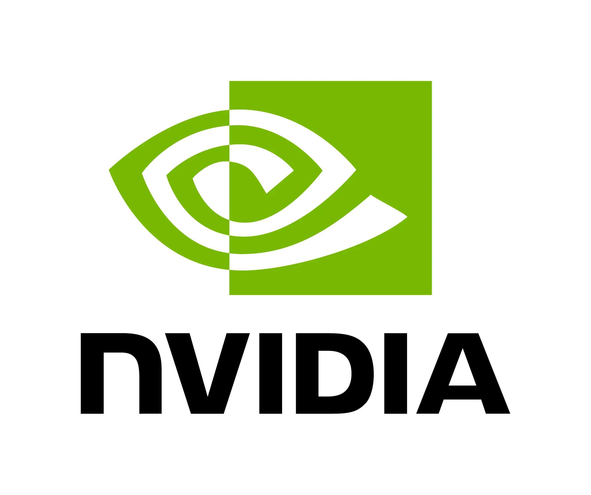

Yue Zhao - AI Auditing and Assurance for Agent Systems
I am not affiliated with any company in an employment, consulting, or advisory capacity.
I am open to future external opportunities on a part-time, advising, or visiting basis.
See Collaboration for current collaboration scope and contact details.
Lab Openings. We are warmly welcoming new members to the FORTIS Lab!
- Ph.D. student hiring for 2026 Fall has finished.
- Also check other labs with openings. Good luck!
- Future Ph.D. students should be comparable to our 1st year Ph.D. students -- see FORTIS Lab.
- We welcome both undergraduate and graduate interns from USC and other institutions.
- We provide compute support, including in-house GPUs, LLM API credits, and cloud resources (primarily AWS + NSF access).
- For high-performing MS/undergraduate researchers, we may consider hourly pay on a case-by-case basis.
- Preferred candidates are located in North America for time zone compatibility.
- I do not hire in-person summer interns -- I am enjoying summer and working remotely :)
Research Summary
My research focuses on AI auditing and assurance for agent systems, with related work on safety, security, and high-stakes deployment of foundation models. I study how tool-using and multi-agent systems can produce traceable evidence of their behavior, support meaningful audit after deployment, and enable verifiable checks of safety and policy requirements. This includes the evaluation and control of agent skills, runtime guardrails for real-world deployment, and demanding application settings where reliability and accountability matter. This agenda is organized around three closely connected directions:
-
Auditable and Verifiable Agent Systems
I develop methods, benchmarks, and open-source systems for making foundation models and agent systems more auditable and verifiable. This work includes execution tracing, trustworthiness evaluation, policy and behavior checking, ecosystem-scale risk scanning, and continuous monitoring that produces usable evidence for assurance in deployment. More recently, my group has also started studying how agent skills can be evaluated, governed with guardrails, and transferred across agent systems. Representative systems include agent-audit and TrustLLM.
Keywords: AI Auditing, AI Assurance, Agent Systems, Agent Skills, Traceability, Policy Checking, Runtime Monitoring, Trustworthiness Evaluation, Risk Analysis
-
AI Safety, Security & Runtime Guardrails
I study failure modes, attack surfaces, and runtime control layers in large language models and agent systems, and design methods to detect, block, and mitigate unsafe or compromised behavior. Representative topics include hallucinations, jailbreaks, prompt attacks, privacy leakage, model extraction, and failures in multi-agent interaction, together with runtime guardrails such as policy enforcement and approval workflows for tool-using agents. Representative systems include Aegis. This direction is also informed by my earlier work on anomaly detection and out-of-distribution detection.
Keywords: LLM Safety, Agent Safety, AI Security, AI Agent Security, Runtime Guardrails, Policy Enforcement, Hallucination Mitigation, Jailbreak Detection, Prompt Attacks, Privacy Leakage, Model Extraction, Robustness, OOD Detection, Anomaly Detection
-
AI for Science & Society
I apply reliable and auditable AI systems to domains where correctness, safety, and accountability matter, including climate and weather forecasting, healthcare and biomedicine, and computational social systems. These applications also serve as demanding testbeds for auditing, assurance, and safety methods.
Keywords: AI for Science, Climate AI, Weather Forecasting, Healthcare AI, Biomedicine, Computational Social Systems, Decision Modeling, High-Stakes AI
Biography.
✈ News and Travel
[Mar 2026] We received an NVIDIA Academic Grant Program Award for our project Inference-Time Safety for Multi-Agent Generative AI. Thank you, 
[Mar 2026] We received an Amazon Research Award under the AI for Information Security program for work on securing agentic AI systems through auditing and guardrails. Thank you, 
[Mar 2026] We contributed to Aegis, the open-source firewall for AI agents, with pre-execution blocking, human-in-the-loop approvals, and tamper-evident audit trails. A quick demo is available in the repository; if relevant to your workflows, please star it on GitHub.
{kind=link}
[Mar 2026] We released agent-audit, an open-source security auditing tool for AI agent code with OWASP Agentic Top 10 style checks, taint analysis, and MCP configuration auditing. On ClawHub, agent-audit scanned 18,899 skills and found 13,947 vulnerabilities. If useful, please star it on GitHub.
[Feb 2026] Our work on premise verification via retrieval-augmented logical reasoning for reducing hallucinations has been accepted to TMLR. See publications page!
[Jan 2026] Our group contributed to five papers accepted to ICLR 2026 and WWW 2026. Hats off to the collaborators. See publications page!
[Dec 2025] Our entire group is at NeurIPS 2025, in San Diego! Please reach out to our Ph.D. students for collaborating opportunities and internships!
[Nov 2025] 🎉Our work on explainability–extractability tradeoffs in MLaaS wins the Second Prize CCC Award at the IEEE ICDM 2025 BlueSky Track!.
[Nov 2025] Our paper on mitigating hallucinations in LLMs using causal reasoning has been accepted to AAAI 2026! See our Preprint.
Show more news
[Nov 2025] 🎉LLM-augmented transformers (TyphoFormer) for typhoon forecasting wins the Best Short Paper Award at ACM SIGSPATIAL 2025; see our Preprint!
[Oct 2025] Two new papers accepted to IJCNLP-AACL 2025 Findings — AD-AGENT: A Multi-agent Framework for End-to-end Anomaly Detection and LLM-Empowered Patient-Provider Communication (a data-centric survey on clinical applications of LLMs). Congratulations to all!
[Oct 2025] 🎉Congratulations to our Ph.D. students Yuehan Qin and Haoyan Xu for successfully passing their qualifying exams! Both of them achieved this after 1.5 years transferring to our group. We are so proud of their accomplishments and excited for their continued research journeys and graduation!
[Sep 2025] 🎉Congratulations to Shawn Li for being selected as an Amazon ML Fellow (2025–2026). The fellowship recognizes his strong research achievements as a PhD student and will further accelerate his work in secure and trustworthy machine learning.
[Sep 2025] New collaborative NeurIPS 2025 paper “DyFlow” proposes a dynamic workflow framework for agentic reasoning with LLMs.
🏅 Awards and Grants
As Principal Investigator (August 2023 onwards)
- NVIDIA Academic Grant Program, 2026
- Amazon Research Awards, 2026
- USC CCSL Seed Funding, 2026
- Second Prize CCC Award, IEEE ICDM BlueSky Track, 2025
- Best Short Paper, ACM SIGSPATIAL, 2025
- Capital One Research Awards, 2024
- Amazon Research Awards, 2024
- Best Paper, KDD Resource-Efficient Learning Workshop, 2024
- NSF Award 1, NSF Award 2, 2024, NSF Award 3, 2025
- Google Cloud Research Innovators, 2024
- AAAI New Faculty Highlights, 2024
Prior to Principal Investigator Role (Before August 2023)
- Meta AI4AI Research Award (student co-PI), 2022
- Norton Labs Graduate Fellowship, 2022
- CMU Presidential Fellowship, 2019-2020
- Mantei/Mae Academic Achievement Award, 2011-2015